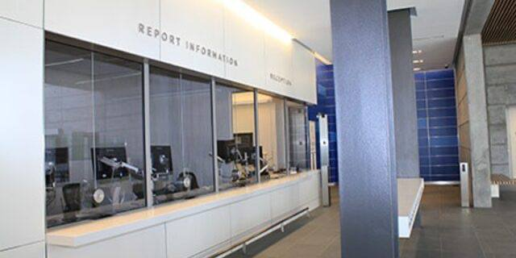
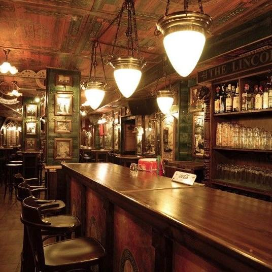
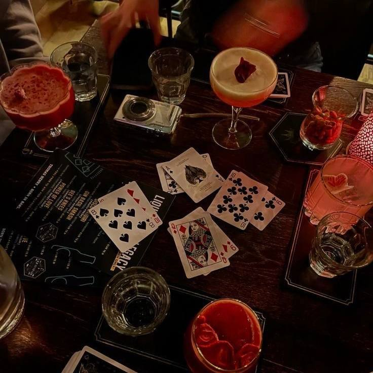
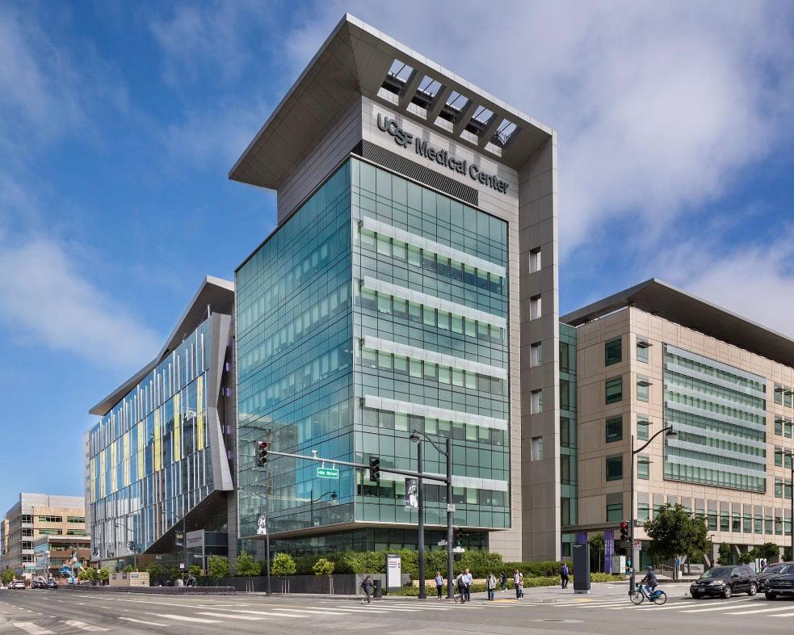
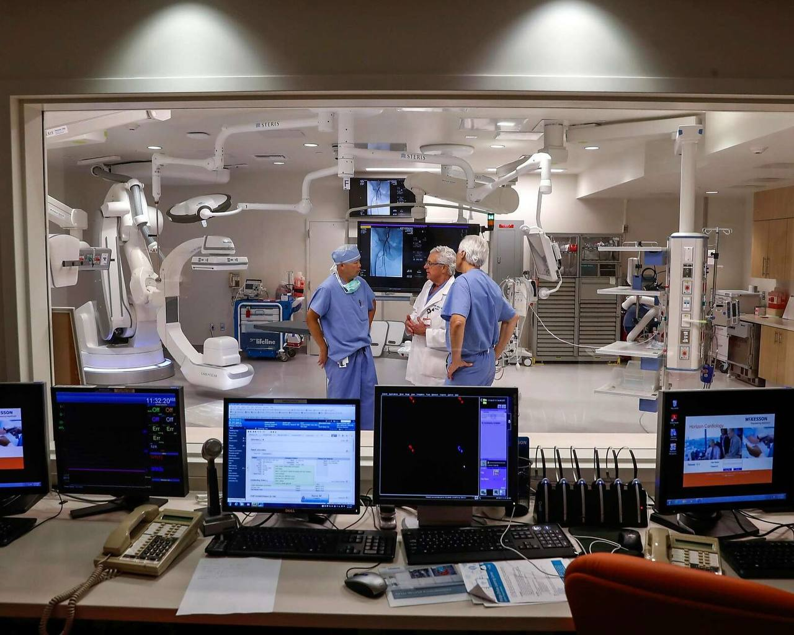
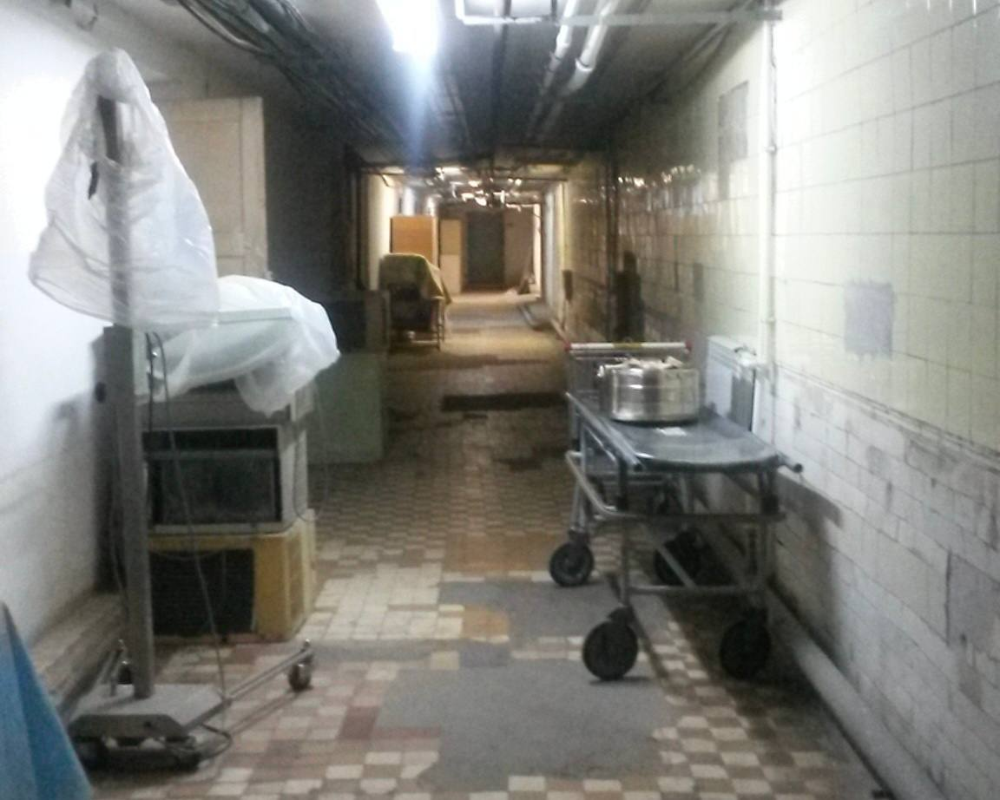
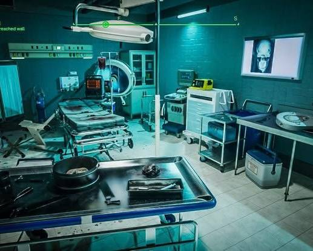

ЛОКАЦИИ
Если для вашего сюжета нужно добавить новые локации, свяжитесь с владельцем. Важно уточнить, что никаких ограничений по локациям нет, этот сайт создан исключительно для удобства, тут указаны лишь основные места, которые часто используются в ролевой, чтобы у всех участников было одно представление и не возникало путаницы.
Полицейский участок.
Место, где закон и порядок это часть повседневной работы. Внутри расположены кабинеты сотрудников, комнаты для допросов, архивы и помещения для хранения улик.
Вдоль стен стоят металлические шкафы и ящики для оружия, боеприпасов и личного снаряжения. Доступ в служебные помещения ограничен электронными замками и пропусками.
Коридоры и рабочие зоны находятся под наблюдением камер, а важные доказательства хранятся в специальных защищенных ячейках.




Бар, принадлежащий Дурину.
Подробнее о баре можно узнать в анкете Дурина. Это место давно стало одним из любимых заведений представителей криминального мира, сюда приходят не только выпить и отдохнуть, но и обсудить дела, вопросы. Именно здесь чаще всего можно услышать сплетни о происходящем в городе, узнать о новых конфликтах, сделках и переменах внутри преступных группировок. Место, куда тяжело попасть, если у тебя нет связей, закрытый бар, лишь для своих.




Конюшня.
Принадлежит одному из членов мафии и представляет собой частное конное хозяйство, расположенное за городом. Основная деятельность связана с разведением, содержанием и подготовкой лошадей к скачкам. Большинство лошадей участвует в соревнованиях, принося владельцу огромную прибыль, а иногда участвуют и в отмывании денег.


Медицинский центр.
Учреждение, находящееся под контролем мафии. Центр имеет множество этажей с отделениями для диагностики в разных отраслях медицины. Помимо этого там расположены кабинеты врачей, палаты для пациентов и операционные. Медицинский центр обслуживает как обычных посетителей, так и членов мафии, обеспечивая им медицинскую помощь без лишнего внимания.
В подвальном помещении, доступ к которому строго ограничен, располагается секретная лаборатория под руководством Альбедо. Там проводятся разные исследования и эксперименты, в том числе запрещённые опыты над людьми, а само существование лаборатории и её деятельность держатся в тайне от посторонних глаз.




